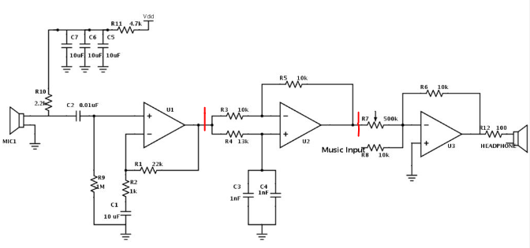

ENEL343

This is the circuit my group used in our ILS project. It's an analog circuit for noise canceling. It was taken from here.
ENEL343 was all about circuit analysis. I learned a bunch of techniques for analyzing steady state and transient responses of RLC circuits like Laplace Analysis.
I also learned about filters, op amp circuits, and two port networks.
The biggest challenges in this course for me was the amount of algebra that analysis required. Particularly, solving the differential equations.
Without getting bogged down by all the math, I think this course helped me to develop an intuition for how to analyze the behaviour of a circuit.